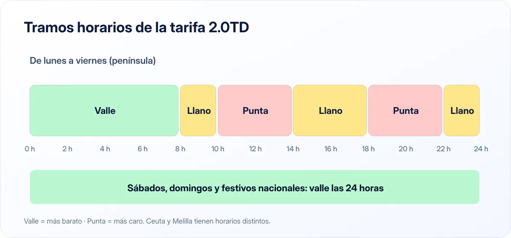

Cómo bajar la factura de la luz: potencia, horarios y tipo de tarifa
Buena parte de lo que pagas de luz no depende de lo que consumes, sino de cómo tienes contratado el suministro. Revisarlo cuesta una tarde.

Puntos clave
- Ajusta la potencia contratada: pagas por ella aunque no la uses.
- Mueve consumos a las horas valle (0–8 h entre semana y todo el fin de semana).
- Compara PVPC y mercado libre con tu consumo real, no con el anuncio.
Entiende tu factura en dos minutos
La factura de la luz de un hogar en España (tarifa de acceso 2.0TD, para potencias de hasta 15 kW) tiene dos grandes bloques:
- Término de potencia: lo que pagas por tener disponible una potencia determinada, la uses o no. Se cobra por kW contratado y por día.
- Término de energía: lo que pagas por los kWh que consumes realmente.
A esto se suman el impuesto eléctrico, el alquiler del contador y el IVA. Los dos primeros bloques son los que puedes optimizar.
1. Ajusta la potencia contratada
Muchas viviendas tienen más potencia de la que necesitan porque se contrató hace años o "por si acaso". Cada kW de más es un coste fijo todos los días del año.
Cómo saber cuánta necesitas
- Mira tu máxima potencia demandada. Con el contador digital, puedes consultarla en el área de clientes de tu distribuidora o, a veces, en la propia factura.
- Piensa en qué aparatos usas a la vez. El horno, la vitrocerámica, la lavadora y el aire acondicionado son los que más potencia piden. Si no los usas simultáneamente, probablemente puedas bajar.
Dos potencias distintas
Con la 2.0TD puedes contratar dos potencias: una para el periodo punta-llano y otra para el periodo valle. Si cargas un coche eléctrico por la noche, por ejemplo, puedes tener más potencia en valle y menos durante el día.
Bajar la potencia suele ser gratuito o muy barato, pero subirla de nuevo puede tener coste. Baja de forma gradual.
2. Aprovecha los tramos horarios

En la península, el precio de la energía en la tarifa 2.0TD cambia según la hora:
| Periodo | Horario de lunes a viernes |
|---|---|
| Punta (más caro) | 10:00–14:00 y 18:00–22:00 |
| Llano | 8:00–10:00, 14:00–18:00 y 22:00–24:00 |
| Valle (más barato) | 0:00–8:00 |
Los sábados, domingos y festivos nacionales son valle las 24 horas. Ceuta y Melilla tienen horarios ligeramente distintos.
Qué mover a horas valle
- Lavadora, lavavajillas y secadora: usa el inicio diferido.
- Termo eléctrico: programa el calentamiento por la noche.
- Carga del coche eléctrico o patinete.
- Planchado y cocinados largos, mejor en fin de semana.
3. PVPC o mercado libre
En España puedes elegir entre dos tipos de contrato:
- PVPC (tarifa regulada): solo la ofrecen las comercializadoras de referencia. El precio de la energía cambia cada hora según el mercado. Es la única que da acceso al bono social, si cumples los requisitos.
- Mercado libre: cada comercializadora fija sus precios. Puede ser precio fijo todo el día, precio por tramos o indexado al mercado.
Ninguna es siempre mejor. Cuando los precios mayoristas son bajos, el PVPC suele salir bien; cuando suben, un precio fijo da estabilidad. La mejor forma de decidir es usar el comparador oficial de la CNMC, que calcula el coste anual con tus propios datos de consumo.
Desconfía de las ofertas que solo anuncian el precio del kWh. Mira también el término de potencia, los servicios añadidos y la permanencia.
4. Revisa los servicios añadidos
Muchas facturas incluyen "packs de mantenimiento", seguros o servicios de asistencia que se contrataron por teléfono. Revisa las líneas de tu factura y da de baja lo que no uses.
5. Reduce el consumo sin pasar frío
- Elimina el consumo fantasma. Televisores, decodificadores y cargadores en espera suman. Usa regletas con interruptor.
- Electrodomésticos eficientes. Al cambiar uno, fíjate en la etiqueta energética: la diferencia en consumo anual puede compensar el precio.
- Climatización. Cada grado menos de calefacción en invierno o más de aire acondicionado en verano reduce el consumo. Unos 20 °C en invierno y 25–26 °C en verano son referencias habituales.
- Iluminación LED. Si aún te quedan bombillas antiguas, cámbialas.
Paso a paso para esta semana
- Busca tu última factura y apunta potencia contratada, consumo anual y tipo de tarifa.
- Consulta tu potencia máxima demandada en la web de tu distribuidora.
- Introduce tus datos en el comparador de la CNMC.
- Si te conviene, cambia de comercializadora (es gratis y no hay corte de suministro) o ajusta la potencia.
- Programa lavadora, lavavajillas y termo en horas valle.
En resumen
La potencia contratada, los tramos horarios y el tipo de tarifa son las tres palancas principales. Revisarlas una vez al año, junto con el resto de recibos del hogar, puede suponer un ahorro notable sin cambiar tu forma de vivir.
Fuentes consultadas
Este artículo es informativo y no constituye asesoramiento financiero, fiscal ni jurídico personalizado. Las cifras son orientativas y pueden cambiar; consulta las fuentes oficiales y, si lo necesitas, a un profesional. Cómo elaboramos nuestras guías.